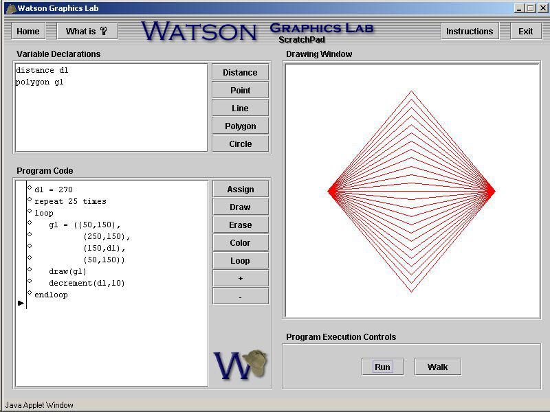

The previous section of this chapter introduced you to the major programming constructs available in the Watson Graphical Language. These constructs are analogous to tools. In this section we describe how these tools may be used to write programs that perform some particular task. If you like, you can think of the previous section as introducing what you have to work with in WGL while this section shows you how to actually draw pictures with WGL.
We will begin by exploring the creation of simple static images. A static image is an image that does not change over time. Programs that create more complex static images will be presented next, followed by programs that create dynamic images which do change their appearance over time. As you will see, the loop statement is invaluable for creating complex static and dynamic images.
If you have not done so already, now would be a good time to begin exploring the capabilities of the Watson Graphics Lab. This lab supports two different ways of creating images: an interactive mode and a program mode. The interactive mode allows you to draw images directly on the screen, using the mouse and drawing window. The program mode consists of an editor for constructing WGL programs and an interpreter for executing them.
contains an illustration of the Watson Graphics Lab. As you can see, the lab consists of four main regions: a “Drawing Window” used to display and interactively draw objects; a “Variable Declarations” window used to define and display program variables; a “Program Code” window for creating and editing program statements; and a “Program Execution Controls” window for running programs.
The Watson Graphics Lab